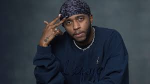

Ricardo Valdez Valentine Jr. (born June 24, 1992), known professionally as 6lack (stylized as 6LACK, pronounced "black"), is an American singer-songwriter and rapper. Born in Baltimore and raised in Atlanta, he gained recognition following the release of his 2016 single "Prblms", which marked his first entry on the Billboard Hot 100. The song preceded the release of his debut studio album, Free 6lack in November of that year through Love Renaissance and Interscope Records. It received a Grammy Award nomination for Best Urban Contemporary Album and earned platinum certification by the Recording Industry Association of America (RIAA).

Two years later, he released his second studio album East Atlanta Love Letter (2018), which peaked at number three on the Billboard 200 chart. That same year, he released the single "OTW" (with Khalid and Ty Dolla Sign) and guest featured on Normani's single "Waves"—earning him a MTV Video Music Award. In June 2020, he released his debut extended play (EP) 6pc Hot, which included the single "Know My Rights" (featuring Lil Baby). Later that year, he guest performed alongside Elton John on Gorillaz's single "The Pink Phantom". In 2021, he released his highest charting single "Calling My Phone" (with Lil Tjay), which peaked at number three on the Billboard Hot 100 and peaked on the Canadian Hot 100. His third album, Since I Have a Lover (2023) was met with moderate critical and commercial reception.
He is also a member of the Atlanta-Baltimore music collective Spillage Village, founded by EarthGang and JID. 6lack has received three Grammy Award nominations in addition to an MTV Video Music Award.